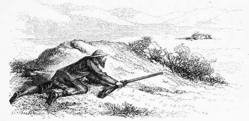

Part 5
Description
This section is from the book "Hog Hunting In The East, And Other Sports", by J. T. Newall. Also available from Amazon: Hog Hunting in the East, and Other Sports.
Part 5
"No ! I cannot say that I am personally acquainted with such; but I have no doubt samber would charge if brought to bay and carelessly approached, as a red deer might do. Antelopes are very vicious in the rutting season when domesticated, and will sometimes attack both man and beast when the fear of the former has worn off by familiarity.
Some of the native chiefs keep them along with rams, partridges, and quails, as well as elephants and the larger quadrupeds, for purposes of fighting. In Jeypore I remember seeing a number of black buck, each tied to its separate stake, in a large yard, and it was with the risk of a butt that any stranger approached within the limits of their tethers."
" What do you say to being actually charged by a gazelle, Hawkes ? " inquired Danvers.
" I suppose when you were cutting its throat, and it was struggling to get away. Many a man gets his shin scraped or is knocked over on such occasions, or in other way suffers from an incautious approach. Was it at such a time ?"
"No. I was deliberately charged. I wounded a chink buck one morning by putting a bullet through its body, and as it went away pretty strong, called up my horse and spear, which accompanied me, to ride it down. Making a short but sharp spurt, I ran up, and, after turning it several times, it actually came at me, and passed under the belly of my horse, without however, doing any damage. It was very possibly, indeed most probably, done in sheer confusion at its abortive attempts to escape. But still the fact remains, and it might have been in a last, reckless, despairing effort to do injury. I soon after finished it."
"Yes. I should conceive it was just what the natives call ' gobrah,' (an expressive word meaning so confused as to lose all head). But what good runs wounded buck sometimes give. Poor beasts ! I have seen them go away on three legs, for a time hardly seeming to miss the dangling fourth, and not over-taken them for miles. Indeed, I have heard of their running clean away from their pursuers."
" The last black buck I shot gave me a pretty considerable run on my own legs, though two of his were broken," Stewart remarked. "Had it not been more cruel to let it escape, I would willingly have ceased to pursue and persecute it. But it was necessary, in mere humanity, to destroy the poor wounded thing, though I felt very uncomfortable while in chase.
"I had unsuccessfully tried to approach several deer, for they were very wild, and the ground ill adapted for stalking. At last I determined to walk up boldly towards a herd and take a long shot. I have often found that to be the best plan where deer are particularly wild. Anything like an attempt at a concealed approach they are on the look out for; but one made in an open, careless, sauntering manner, and without disguise, somewhat deceives them as to your intentions. I have occasionally, too, got a fair shot by pretending to be picking up sticks.
"On this occasion, assuming an air quite unconcerned, I walked boldly, diagonally towards them ; but though they did not gallop off, they walked away as I neared them, and seemed content to keep a distance of about two hundred and fifty yards between us. I tried for some time, by going to and fro, and circling round, to reduce this, but was at last obliged to give it up as hopeless. Accordingly, I fixed my eye on one magnificent buck, with a splendid pair of horns, and determined, that since I was obliged to chance a shot at so great a distance, it should be at something worth having, a score of yards, more' or less, making little difference. Others were nearer by that space, but I selected the most noble looking to try my skill upon. He gave me a nice broadside shot. So putting up the highest sight, and drawing the bead up his leg, I fired, not, I confess, with much expectation of hitting. The answering thud, however, announced a hit, and the buck cantered off on three legs, his off fore-leg, the side nearest to me, being broken somewhere between the knee and shoulder. A little more elevation and I should have made a remarkably neat shot.
" I had no horse with me, having only strolled out from my camp in the afternoon for a few hours' exercise and sport; so I was obliged to wait and endeavour to get another shot. The herd went away, leaving the buck to take care of himself. Indeed, had he tried to keep with them, they would doubtless soon have turned him out of their society. I watched him long through my glass. Several times he stood, and at last, seeing no one in pursuit, lay clown on a bit of open plain. It was certainly a most difficult spot to approach, for he had selected it with great judgment away from all cover which might conceal an enemy. I scanned the ground minutely, and at last detected a small stony mound with a bit of scrub on the top, which appeared to me to be within easy shot of the recumbent buck. But how to get behind it was the thing.
" I first of all loaded, and then retired towards a low undulating ridge, which concealed me from the distant antelope. Screened by this, I walked round until I thought I was somewhere about the spot which would bring the mound I have spoken of between the buck and myself. I cautiously crept up, and found that I was not far out; but by passing over the ridge I should expose myself. I therefore cast about for some other mode of approach. This was afforded by a nullah intersecting the ridge, and from thence one or two scattered bushes would give me, I thought, an opportunity of getting in the rear of the mound. Again, therefore, I retired, reached the nullah, and crept up it. From this I dragged myself to one bush, then on to another, until I had the mound fairly between the buck and myself. It then became necessary to advance in an attitude compounded of that of a crouching tiger and a snake. With some difficulty, and a little soreness of knees, however, I managed to effect my object, and reach the mound, or rather, as I found it on a closer acquaintance, the apex of a gentle swell in the plain. After recovering wind, 1 brought up my rifle, and, without being detected by the buck, who was lying flat at full length, aimed at him from a distance little over a hundred yards. I pulled, and there was a struggle, a small cloud of dust, and the buck rose only to fall back.
My last black buck.
" I had no knife with me ; and seeing at once that the beast was not killed, I began quickly to re-load. Before this operation was completed, the buck, after several struggles, rose ; and then I saw that my second shot had smashed the other fore-leg near the knee, and the wretched brute began to hobble away on his two stumps with a desperate exertion painful to witness. Directly I had loaded and called to the man who accompanied me, and who I had left behind, I ran after the antelope, thinking I should soon overtake it. But it made such good use of its shattered members, that I was pretty well done before I neared it. It must have gone at least half a mile, and was then well ahead of me. It became, however, exhausted, and lay down among some bushes, allowing me to approach within a few yards. It then made another effort to escape, but I rolled it over with a bullet through the body.
" I assure you, that though I at first laboured to overtake it, the buck quite outran me. It was certainly anything but pleasant to regard the poor thing's frantic efforts to escape, or imagine the pain it must have suffered in attempting to do so. But the horns proved a fine trophy, being within a shade of twenty-four inches of direct measurement, broad between the points, and beautifully spiral."
" A very good length, and one not often exceeded," said Mowbray. " Bucks' horns certainly make nice sylvan ornaments, though, of course, inferior to stags' antlers."
" I * have several pairs of about the same length, which I have never been able to get beyond. When speaking of pairs, though, one is a single horn, the other having been broken off near the head, and forms only a stump. However, it's getting late, and I am off to roost. Good-night."
This was an example soon followed by the others.
* Appendix, Note T.
Continue to:
- prev: Part 4
- Table of Contents
- next: Chapter XVIII